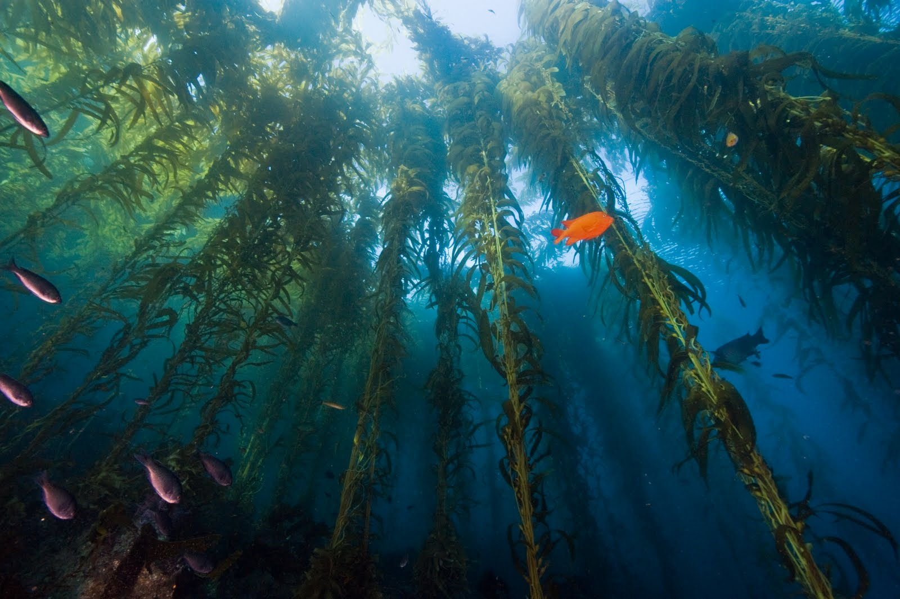

Home
Sobre a Desenvolvedora
Quiz
Os tubarões possuem ossos?
--Selecione--
Sim
Não
Os peixes respiram pela boca?
--Selecione--
Sim
Não
As algas tem um papel importante no ecossistema?

--Selecione--
Sim
Não
Quais outros nome podemos chamar as esponjas do mar?
--Selecione--
Poríferos
Buchas-do-Mar
Quantos tipos de répteis marinhos são encontrados hoje?
--Selecione--
4
2
É correto afirmar que existem mais de 7.000 espécies de equinodermos?
--Selecione--
Sim
Não
A qual grupo pertence as águas-vivas?
--Selecione--
Cnidários
poríferos
O polvo e a água-viva fazem parte da mesma família?
--Selecione--
Sim
Não
O que seria uma Holothuria sanctori?
--Selecione--
Pepino do Mar
Lesma do Mar
Os vermes marinhos podem ser considerados primos das minhocas?
--Selecione--
Sim
Não
Antes de ver seus resultados, compartilhe como foi sua experiêcia realizando o Quiz e alguma sugestão do que você gostaria de ver por aqui
Enviar
Próxima Questão
Questão anterior